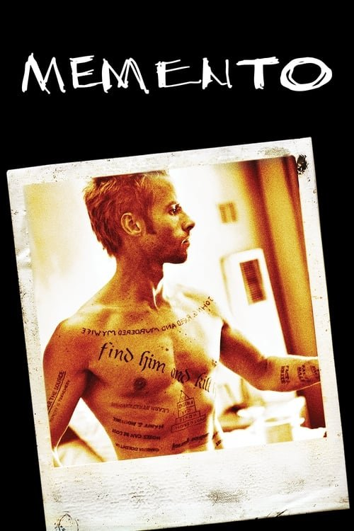

Memento (2000)

Plataforma: Netflix
Puntuación IMDb: 8.5/10
Duración: 1h 53m
Género: Thriller psicológico, Neo-noir
Sinopsis Rápida
Un hombre con amnesia anterógrada busca vengarse del asesinato de su esposa, utilizando fotos y tatuajes como pistas.
Sinopsis Detallada
Leonard Shelby, un detective con amnesia anterógrada, debe reconstruir los fragmentos de su pasado para atrapar al asesino de su mujer. La película utiliza una estructura narrativa no lineal, que presenta la historia en orden inverso, creando una experiencia cinematográfica única y desafiante. 'Memento' es un thriller inteligente y absorbente, que juega con la percepción del tiempo y la memoria, dejando al espectador en vilo hasta el final.
¿Por qué tenés que verla?
- Una narrativa innovadora y absorbente que desafía la estructura tradicional del cine.
- La dirección magistral de Christopher Nolan, estableciendo su estilo narrativo.
- Su influencia en el cine contemporáneo y su legado como película de culto.
- Una historia cautivadora con giros inesperados que mantienen la tensión hasta el final.
Idea Extra
Análisis de la estructura narrativa no lineal de 'Memento'.
{{CONTENIDO_RELACIONADO}}